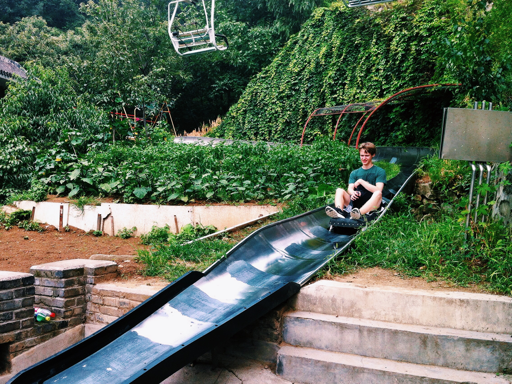

Year Three
︵‿︵‿୨♡୧‿︵‿︵
2013 to 2014

Our sophomore year of college and long distance. We both moved out of the dorms, into utter squalor. Marcie went to the UCLA co-op, where she lived in a literal closet whose ceilings were as bloated and fungoid as a Lovecraftian deity. My friends and I rented a house on Como Avenue, where our landlord let it get so cold that all of the liquids in the basement froze solid. In the summer, I visited Marcie in Los Angeles. From there, the two of us flew to Shanghai, where we spent the summer working as interns for a home furnishings company.
︵‿︵‿୨♡୧‿︵‿︵
Los Angeles, Minneapolis, & Eden Prairie
The happy face of a young man whose household liquids have not, as of yet, frozen solid.
In those days, we had gams that didn’t quit.
The first of our world-famous shadow portraits.
She hungers. She prepares to feed.

June 2014: Santa Monica Beach.
︵‿︵‿୨♡୧‿︵‿︵
中国 (China)

I slowly dissolve into a puddle of sweat on a trip to the Forbidden City.
I honor the lord of all horses, who has been my friend through many dangers.

Lunch in Wuzhen with our friend Ben.
Our beautiful young hands. We ate breakfast outside of Sijing Station every morning on our way to work.
Our beautiful young feet. I lost so much weight in China that my body started to show bones that I didn’t know existed.
July 2014: West Lake (西湖), Hangzhou. We make the mistake of standing next to somebody who exercises regularly.

We climbed more than 60,000 stairs to reach the top of Mount Huangshan (黄山). Instead of one of China’s most iconic landscapes, we saw nothing but rain and fog. Here, you can see raindrops, not tears of disappointment, running down my cheeks.
ML: Brian ate an entire pack of Oreos on the way up. But he was still so sad.
I take the slide down the Great Wall of China. A rare image of me cutting loose and showing my carefree attitude.